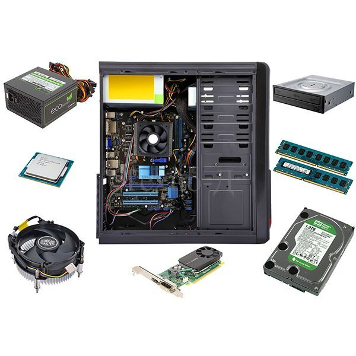
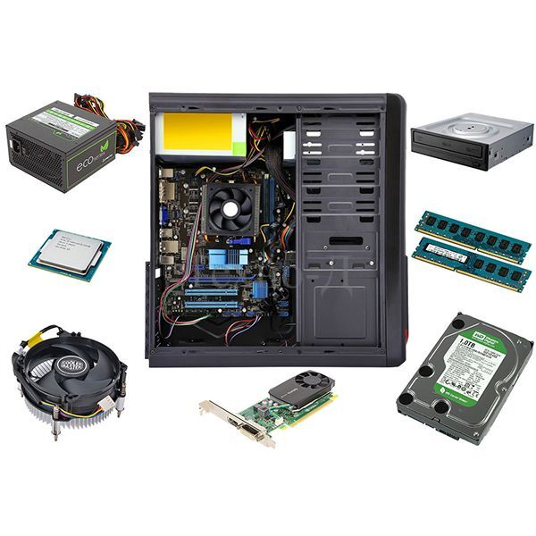

Злесь ты найдешь как собрать ПК самому.
Если ты готов подробно читать информацию,тогда приступим:)
Если ты готов подробно читать информацию,тогда приступим:)
Известно, что персональные компьютеры состоят из системного блока, монитора, клавиатуры и мыши. Этот набор называют базовой комплектацией, к которой дополнительно можно подключить внешние устройства, такие как принтер, сканер, колонки, внешние сетевые карты. А как устроен компьютер внутри: об этом доступно для детей рассказано в данной статье. Если аккуратно снять боковую крышку корпуса системного бока, то можно обнаружить металлические и пластмассовые детали разной величины и формы, соединенные разноцветными проводами, а в центре – большой вентилятор. Что это за предметы и как они работают?
К внутренним устройствам, которые располагаются в системном блоке, относятся:
Главным устройством на материнской плате, является процессор. Он представляет собой микросхему, в которой производятся все вычислительные операции. Так как при работе процессор нагревается, то на нем устанавливают радиатор с кулером. Стоимость производства новых типов микропроцессоров очень велика, поэтому их выпускают только крупные компании и очень большими тиражами. Изготовлением процессоров для персональных компьютеров занимаются фирмыIntel и AMD.На материнской плате размещается оперативная память. В ней временно хранятся данные, используемые во время работы процессора. Оперативная память энергозависима. При выключении компьютера вся информация из памяти сотрется. Внешне оперативная память напоминает линейку зеленого цвета, на которой установлены черные прямоугольные микросхемы. Вдоль длинного края линейки оперативной памяти можно увидеть небольшую выемку – ключ. Расположение ключа для разных видов памяти различно. Различают типы памяти DDR,> DDR2, DDR3 и DDR4.
В качестве дополнительных устройств к материнской плате могут быть подключены платы расширения: видеокарты, звуковые карты, сетевые карты, контроллеры различных портов(COM, LPT, SATA, USB). Для каждого устройства на материнской плате предусмотрены свои разъемы:
Так как ПК нужно долго собирать,поэтому пашаговая инструкция вы найдете по ссылке ниже(below)
ссылка на пашаговую инструкцию